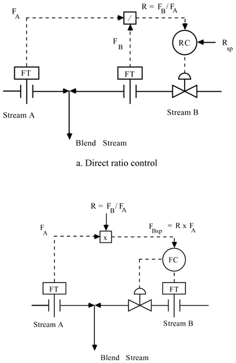
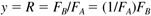
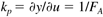
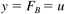
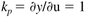

| [ Team LiB ] |
|
12.2 Ratio ControlRatio control is similar to feed-forward control, since both typically involve the measurement of a stream flow rate. Ratio control is often used in component blending problems. Consider the control strategies shown in Figure 12-1, where stream A is a "wild stream" (disturbance) and it is desirable to maintain the flow rate of stream B at a constant ratio to stream A. In Figure 12-1a the FB/FA ratio is calculated and sent to a ratio controller. In Figure 12-1b the flow rate of stream A is measured and multiplied by desired ratio to determine the setpoint for the stream B flow rate. Figure 12-1. Ratio control. Comparison of two alternatives. Alternative 12–1b is favored over 12–1a since it results in a linear input-output relationship. In Figure 12-1a the steady-state relationship between the manipulated input (valve position, related to FB) and the measured output (the ratio, FB/FA) is  and the steady-state process gain is  Clearly, the process gain varies as a function of the flow rate of stream A. This means the ratio controller would need to be tuned differently depending the stream A flow rate. In contrast, the relationship between the manipulated input (valve position, related to FB) and the measured output (FB) for the flow controller in Figure 12-1b is  so the gain is  which is constant. The ratio could be specified to maintain an excess of component B in a reaction, for example. A common use of this would be the supply of combustion air to a furnace. Stream A could represent the fuel gas, for example, and stream B would represent the combustion air. The blend stream could also have a composition or product property measurement and controller; the output of this controller would be cascaded to the desired ratio of stream B flow to stream A flow. In Exercise 1 you have the opportunity to sketch this control strategy. |
| [ Team LiB ] |
|